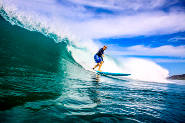
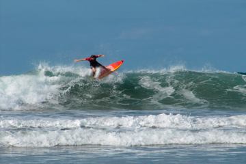
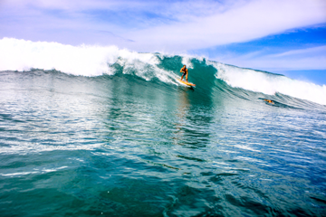

LA HISTORIA DE GARZA
Mis comienzos en este oficio fueron de muy temprana edad, tendría 14 años cuando comencé a reparar tablas en Uruguay (Punta del Este) donde veraneaba todos los años ya que mi padre tenía una casita en la parada 20 de la brava, en esos años comencé llevando resina tela y con un taladro para reparar mis tablas y la de mis amigos, lo hacía en el patio trasero de la casa, en esos años se puso muy de moda el windsurf así que había muchas reparaciones de tablas, mástiles, quillas, orzas, etc. Con lo que recaudaba me podía hacer unos viajecitos surferos al sur de Brasil. Fue así que en ocasión de un campeonato de surf sudamericano llego a la costa Uruguaya el campeón brasilero Daniel Friedman, él había traído una tabla muy corta para la época seria un 5.6 huevito retro cola fish, pero la tenía sin la tela de vidrio o sea sin laminar, así que se acercó a mi casa para ver si la podíamos laminarla juntos y fue así como comencé a pensar en fabricar tablas.
Ni bien regrese a Buenos Aires me junte con mi gran amigo de olas Eddie y compramos EPS (poli estireno o telgopor) para fabricar una tabla, copie la misma forma de la de Friedman, sabíamos que la resina poliéster que yo utilizaba derretía el EPS así que para aislarla pusimos cola vinílica, se imaginaran que la resina traspaso la cola vinílica y derritió toda la tabla.
Probamos nuevamente pero esta vez compre resina epoxi, no me olvido la laminamos en la cocina con las hornallas prendidas ya que la epoxi no seca a menos de 20 grados y era invierno, así finalmente pude hacer la primera tabla.
Con el tiempo comencé a producir mis tablas personales en EPS y Epoxi, les estoy hablando de 1972 al 77, hacia muy pocas tablas por año pero en los veranos las vendía y seguía con las reparaciones de tablas .
En esos años comenzó la movida del windsurf, al principio eran tablas de surf modificadas a las que le ponían straps , después se pasó a las tablas grandes de más de 3 metros para navegar y se transformó más en un deporte náutico, los años 80 a 84 se transformó en boom y nadie dejaba de tener una tabla en su casa .
Luego evoluciona nuevamente el windsurf y comienzan a reaparecer tablas de wind para surfear olas, es así que utilizando mis conocimientos de resinas armo un taller en Perú Beach con unos amigos y comienzo a fabricar en Argentina las primeras tablas de olas, fabrique yo mismo una matriz para espumar poliuretano blanco utilizábamos poliuretano en estado virgen que nos proveía una empresa llamada Alcanos eran dos líquidos transparentes como el agua Poliol e isocianato en estado puro que al mezclarse espumaban, la matriz era muy grande ya que espumábamos un foam de 3 metros para hacer las tablas de olas, y la reacción era muy fuerte el lugar más seguro era estar arriba de la matriz, mezclábamos los líquidos manualmente con un mezclador hecho con un taladro y un paleta de ventilador, teníamos muy pocos segundos para volcar el producto dentro del molde y cerrarlo con 12 ganchos de cierre rápido.
Con este foam comenzamos a producir las primeras tablas de olas, éramos los pioneros junto a los Hermanos Flaminio de Mar del Plata que hacían la marca Trade Wind, nuestras marcas fueron Morocco y Natural Art.
Paradójicamente el surf no era un deporte muy popular en esos años no habría más de 100 surfistas en Mar del Plata y Uruguay nos conocíamos todos.
Era una época en que el surf era compartir y nos juntábamos todos en la misma playa a surfear.
Luego llego la época del deporte Bodyboard (Morey Boogie), durante la guerra del Golfo hay una recesión muy fuerte en USA ,mi hermano que residía en California me informa que estaban rematando las maquinaria de la fábrica Scott Hawaii de soft y bodyboard, así que viajé a tratar de comprar las maquinas, logramos el cometido, luego conseguimos que el conocido Bobby Zabad dueño de la marca BZ y Debbie Cladwell dueña de Custom X, nos den un curso de fabricación de soft y bodyboards.
Ya de regreso en Buenos Aires se importaron las maquinarias y materia prima y desarrollamos en Argentina la primera fábrica de Bodyboards, el deporte se hizo muy popular y fabricábamos miles de tablas por año exportando a Uruguay, Brasil, Portugal, Sudáfrica y Chile. Las marcas grandes nos buscaron y terminamos fabricando Morey Boogie, Custom X, Manta y Mormaii en Argentina para el mercado del Mercosur.
En otro de mis viajes estuve con la gente de Doyle donde pude aprender nuevas técnicas para la fabricación de soft en polietileno.
Llego la época del foam importado Clark Foam, esto potencio enormemente la fábrica de tablas de fibra auto importando el foam todos los años así como la fibra y la resina. Fuimos los primeros representantes del sistema FCS y Gorila Grip para Argentina y Uruguay. La demanda comenzó a crecer y el surf empezó a ser un deporte más popular.
Muchos veranos americanos (Mayo- Septiembre) viajaba a California a visitar a mi hermano en San Diego y de paso entrenarme en el oficio de la fabricación de tablas de surf, fue así que participe en las siguientes marcas o fábricas, Becker, Aloha, Epoxi Pro (Channell, Lost, Plumeria), Ukelele, Uncle Mike (Rusty), Linden .También en varias oportunidades contrate shapers para la producción Argentina y uruguaya es así que shapearon Avelino Bastos, Arelo y Pigmeu de Brasil, esto me permitió conocer los distintos estilos de shape de distintas culturas y lugares.
También, participaron en la fábrica shapers Argentinos como Rufus y Sebastián Galindo y uruguayos como Willy Barreiro que me ayudaban a cubrir la demanda de producción de tablas cada verano.
Hoy habiendo shapeado más de 10000 tablas de surf en Argentina y Uruguay sigo experimentando técnicas y materiales nuevos.
Así en 2014 incorporamos a la producción materiales como el polipropileno con el cual fabricamos soft la línea Catch de surf y soft de tablas. Este producto fue desarrollado con materia prima 100% nacional y creado 100% por nosotros, buscando un producto duradera que se diferencie de la industria de soft China que se rompe muy rápidamente.
Así que los esperamos junto a mis hijos Juan y Felipe a que se acerquen y prueben nuestros productos.
BUENAS OLAS
GARZA (RODOLFO D. GOÑI)